![[Experimental]](../help/figures/lifecycle-experimental.svg)
| value_box {bslib} | R Documentation |
An opinionated (card()-powered) box, designed for displaying a value and
title. Optionally, a showcase can provide for context for what the
value represents (for example, it could hold a bsicons::bs_icon(), or
even a shiny::plotOutput()). Find examples and template code you can use to
create engaging value boxes on the bslib website.
value_box(
title,
value,
...,
showcase = NULL,
showcase_layout = c("left center", "top right", "bottom"),
full_screen = FALSE,
theme = NULL,
height = NULL,
max_height = NULL,
min_height = NULL,
fill = TRUE,
class = NULL,
id = NULL,
theme_color = deprecated()
)
value_box_theme(name = NULL, bg = NULL, fg = NULL)
showcase_left_center(
width = 0.3,
width_full_screen = "1fr",
max_height = "100px",
max_height_full_screen = 0.67
)
showcase_top_right(
width = 0.4,
width_full_screen = "1fr",
max_height = "75px",
max_height_full_screen = 0.67
)
showcase_bottom(
width = "100%",
width_full_screen = NULL,
height = "auto",
height_full_screen = "2fr",
max_height = "100px",
max_height_full_screen = NULL
)
title, value |
A string, number, or |
... |
Unnamed arguments may be any |
showcase |
A |
showcase_layout |
One of |
full_screen |
If |
theme |
The name of a theme for the value box, or a theme constructed
with |
max_height |
The maximum height of the |
min_height |
The minimum height of the values box. Can be any valid CSS unit (e.g., |
fill |
Whether to allow the value box to grow/shrink to fit a fillable
container with an opinionated height (e.g., |
class |
Utility classes for customizing the appearance of the summary
card. Use |
id |
Provide a unique identifier for the |
theme_color |
|
name |
The name of the theme, e.g. |
bg, fg |
The background and foreground colors for the theme. If only |
width, width_full_screen, height, height_full_screen |
one of the following:
|
max_height_full_screen |
A proportion (i.e., a number between
0 and 1) or any valid CSS unit defining the
showcase |
Explore all of the value_box() options and layouts interactively with the
Build-a-Box app, available
online thanks to shinyapps.io. Or, you can
run the app locally with:
shiny::runApp(system.file("examples", "build-a-box", package = "bslib"))
The appearance of a value_box()
can be controlled via the theme argument
in one of two ways:
a character value describing the theme,
such as theme = "primary" or theme = "blue"; or
theme = value_box_theme() to create a custom theme.
We recommend using named themes for most value boxes (the first approach), because these themes will automatically match your Bootstrap theme.
Bootstrap provides a list of
theme colors,
with semantic names like "primary", "secondary", "success", "danger", etc.
You can set theme to one of these names to use the corresponding theme color as the background color of your value box.
value_box(
title = "Customer lifetime value",
value = "$5,000",
showcase = bsicons::bs_icon("bank2"),
theme = "primary"
)
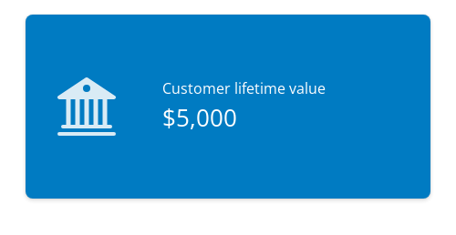
Bootstrap's theme colors are drawn from
a second color list
that includes variations on several main colors,
named literally.
These colors include "blue", "purple", "pink", "red", "orange",
"yellow", "green", "teal", and "cyan".
value_box(
title = "Customer lifetime value",
value = "$5,000",
showcase = bsicons::bs_icon("bank2"),
theme = "teal"
)
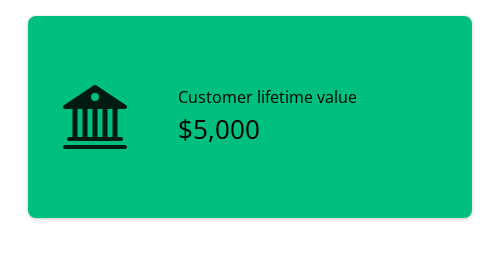
If the theme or color name is provided without any prefix, the color will be used for the background of the value box.
You can also explicitly prefix the theme or color name with bg- to indicate that it should apply to the value box background.
When the theme sets the background color, either black or white is chosen automatically for the text color using Bootstrap's color contrast algorithm.
As before, you can reference semantic theme color names or literal color names.
value_box(
title = "Customer lifetime value",
value = "$5,000",
showcase = bsicons::bs_icon("bank2"),
theme = "bg-success"
)
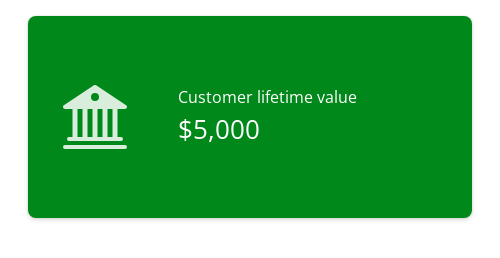
value_box(
title = "Customer lifetime value",
value = "$5,000",
showcase = bsicons::bs_icon("bank2"),
theme = "bg-purple"
)
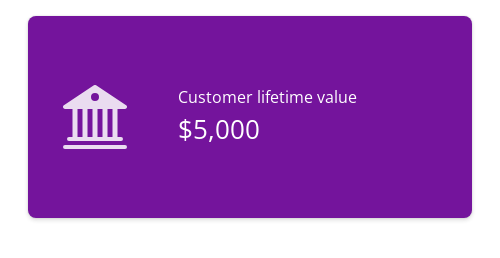
To set only the foreground colors of the value box, you can prefix the theme or color name with text-.
This changes the text color without affecting the background color.
value_box(
title = "Customer lifetime value",
value = "$5,000",
showcase = bsicons::bs_icon("bank2"),
theme = "text-success"
)
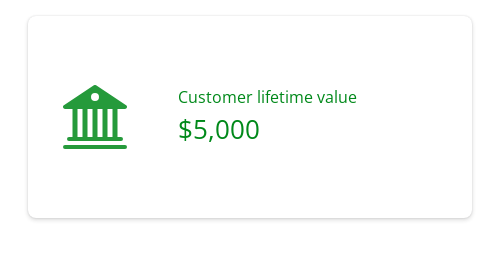
value_box(
title = "Customer lifetime value",
value = "$5,000",
showcase = bsicons::bs_icon("bank2"),
theme = "text-purple"
)
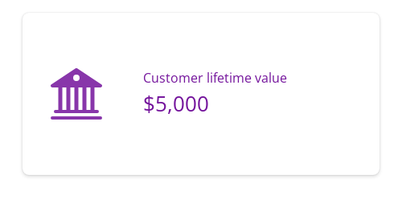
Occasionally you may want to adjust use both background and foreground themes on your value box.
To achieve this, set theme to one of the theme names and use class for the complementary style.
The example below uses theme = "purple" (which could also be "bg-purple") for a purple background, and class = "text-light" for light-colored text.
value_box(
title = "Customer lifetime value",
value = "$5,000",
showcase = bsicons::bs_icon("bank2"),
theme = "purple",
class = "text-light"
)
For a vibrant and attention-grabbing effect, bslib provides an array of gradient
background options.
Provide theme with a theme name in the form bg-gradient-{from}-{to}, where {from} and {to} are named main colors, e.g. bg-gradient-indigo-blue.
value_box(
title = "Customer lifetime value",
value = "$5,000",
showcase = bsicons::bs_icon("bank2"),
theme = "bg-gradient-indigo-blue"
)
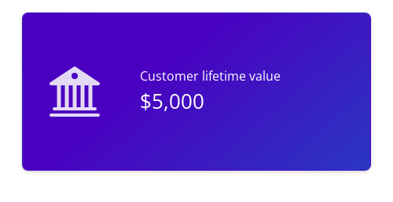
Finally, for complete customization, you can use value_box_theme() to create a custom theme.
This function takes arguments bg and fg to set the background and foreground colors, respectively.
Like with the bg- theme names, if only bg is provided, value_box_theme() will choose an appropriate light or dark color for the text color.
value_box(
title = "Customer lifetime value",
value = "$5,000",
showcase = bsicons::bs_icon("bank2"),
theme = value_box_theme(bg = "#e6f2fd", fg = "#0B538E"),
class = "border"
)
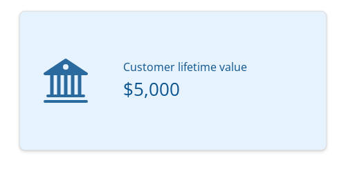
Note that value_box_theme() optionally takes a theme name, which can be helpful if you want to use a named theme and modify the default bg or fg colors of that theme.
value_box_theme(name = "orange", bg = "#FFFFFF") value_box_theme(name = "text-danger", fg = "#FFB6C1")
Also note that bg/fg must be CSS colors, not Bootstrap theme or color names.
This means that theme = "purple" will use your Bootstrap theme's purple color, and bg = "purple" will use the CSS color for purple, i.e. "#800080".
Use the showcase argument to add a plot or icon to your value_box().
There are three layouts available: "left center", "top right", and "bottom".
Set showcase to the name of the layout you'd like, or use the showcase_left_center(), showcase_top_right(), or showcase_bottom() helper functions to customize the showcase area's size.
If you're using a plot as your showcase, you may also want to set fullscreen = TRUE so that your users can expand the value box into a full screen card.
See the value box article for more details.
The "left center" showcase layout is the default, and is perfect for an icon or a small plot.
This layout works best for short value boxes.
value_box(
title = "Energy consumption",
value = "345 kwh/month",
showcase = bsicons::bs_icon("ev-station-fill")
)
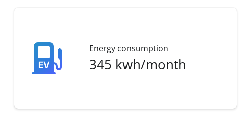
The "top right" showcase layout places the icon or plot in the upper right corner of the value box.
This layout works best for medium-height to square value boxes.
value_box(
title = "Energy consumption",
value = "345 kwh/month",
showcase = bsicons::bs_icon("ev-station-fill"),
showcase_layout = "top right"
)
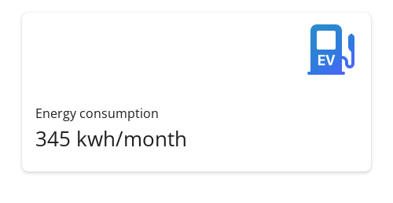
Finally, the "bottom" showcase layout is perfect for full-bleed plots.
This layout places the plot below the title and value, with the plot taking up the full width of the bottom half.
Try this layout with sparkline-style plots. These can be a little tricky to set up, so be sure to check out the Expandable sparklines section of the value boxes article on the bslib website. In this example, we've created a sparkline plot using base R graphics, which isn't generally recommended.
set.seed(4242)
random_sparkline_plot <- function() {
timeseries <- cumsum(runif(100, -2, 2))
x_axis <- seq_along(timeseries)
x_lim <- c(1, length(timeseries))
y_lim <- range(timeseries) + c(-2, 0)
par(mar = c(0, 0, 0, 0))
# Set up the plot area
plot(
timeseries, type = "n",
axes = FALSE, frame.plot = FALSE,
ylim = y_lim, xlim = x_lim,
ylab = "", xlab = "",
yaxs = "i", xaxs = "i",
)
# Add the sparkline line
lines(timeseries, type = "l", pch = NA, col = "#0B538E", lwd = 3)
# Create polygon coordinates for shading
polygon_x <- c(1, x_axis, length(timeseries))
polygon_y <- c(min(y_lim), timeseries, min(y_lim))
# Add shading under the line
polygon(polygon_x, polygon_y, col = "#e6f2fd", border = NA)
}
sparkline_plot <- function() {
as_fill_item(
htmltools::plotTag(
random_sparkline_plot(),
width = 500,
height = 125,
suppressSize = "xy",
alt = paste(
"A sparkline plot with a randomly-generated timeseries.",
"The timeseries starts high and ends low, with lots of variation."
)
)
)
}value_box( title = "Energy consumption", value = "345 kwh/month", showcase = sparkline_plot(), showcase_layout = "bottom" )
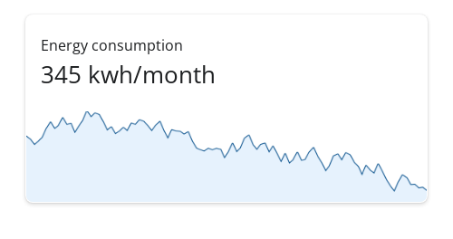
Value boxes are featured on the bslib website in a few articles:
Value boxes are a specialized form of a card() component.
layout_columns() and layout_column_wrap() help position multiple
value boxes into columns and rows.
Other Components:
accordion(),
card(),
popover(),
tooltip()
library(htmltools)
value_box(
"KPI Title",
h1(HTML("$1 <i>Billion</i> Dollars")),
span(
bsicons::bs_icon("arrow-up"),
" 30% VS PREVIOUS 30 DAYS"
),
showcase = bsicons::bs_icon("piggy-bank"),
theme = "success"
)
![[Deprecated]](../help/figures/lifecycle-deprecated.svg)